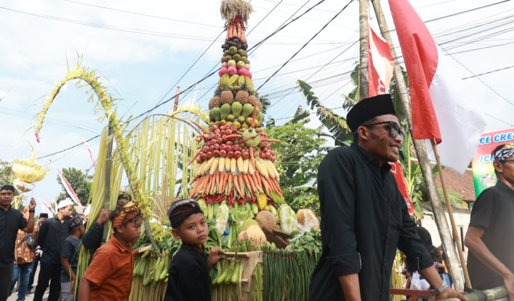
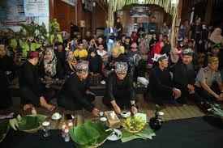
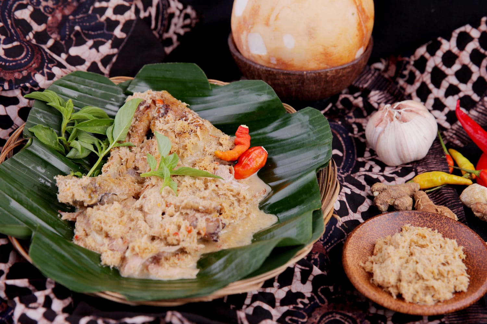
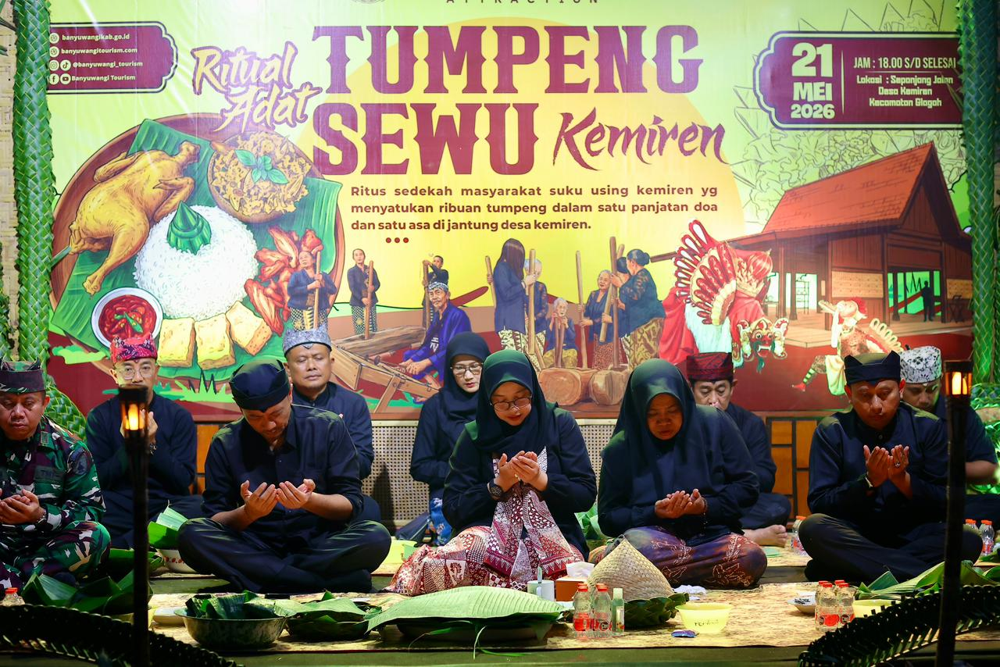

📜 Sejarah
Tradisi Tumpeng Sewu merupakan tradisi adat masyarakat Suku Osing yang dilaksanakan di Desa Kemiren, Banyuwangi. Tradisi ini telah diwariskan secara turun-temurun oleh para leluhur masyarakat Kemiren dan masih terus dilestarikan hingga sekarang.
Awalnya, masyarakat Kemiren mengadakan selamatan tumpeng secara sederhana di rumah masing-masing sebagai bentuk rasa syukur kepada Tuhan atas rezeki, hasil panen, keselamatan, dan kesejahteraan desa. Seiring berjalannya waktu, sekitar awal tahun 2000-an, tradisi tersebut mulai dilaksanakan secara bersama-sama di sepanjang jalan desa sehingga berkembang menjadi acara besar yang dikenal sebagai Tumpeng Sewu atau "Seribu Tumpeng".
Tradisi ini biasanya diselenggarakan menjelang bulan Dzulhijjah atau menjelang Hari Raya Iduladha. Selain sebagai ungkapan syukur, masyarakat juga meyakini tradisi ini sebagai bentuk doa bersama agar desa terhindar dari berbagai musibah, wabah penyakit, dan bencana.
💭 Makna Filosofis
Tradisi Tumpeng Sewu bukan hanya acara makan bersama, tetapi mengandung banyak nilai kehidupan yang diwariskan oleh leluhur:
🙏 Ungkapan Rasa Syukur
Tumpeng Sewu menjadi simbol rasa syukur masyarakat atas berkah, kesehatan, hasil panen, dan kehidupan yang diberikan oleh Tuhan.
🤝 Simbol Kebersamaan
Ribuan warga duduk bersama tanpa membedakan usia, status sosial, maupun latar belakang. Hal ini menggambarkan persatuan dan kekeluargaan yang kuat di tengah masyarakat.
💞 Mempererat Silaturahmi
Tradisi ini menjadi momen berkumpulnya seluruh warga desa bahkan para perantau yang pulang kampung untuk merayakan tradisi bersama.
🏛️ Pelestarian Warisan Leluhur
Tumpeng Sewu mengajarkan bahwa budaya dan tradisi harus tetap dijaga meskipun zaman terus berubah. Tradisi ini menjadi identitas masyarakat Osing Banyuwangi.
🛡️ Tolak Bala
Masyarakat Kemiren percaya bahwa doa-doa yang dipanjatkan dalam tradisi ini dapat menjadi permohonan perlindungan agar desa dijauhkan dari marabahaya dan penyakit.
🎭 Prosesi Pelaksanaan
Pelaksanaan Tumpeng Sewu terdiri atas beberapa rangkaian kegiatan yang berlangsung selama beberapa hari:
1. Mepe Kasur
Warga menjemur kasur khas Suku Osing yang berwarna merah dan hitam di depan rumah masing-masing. Tradisi ini melambangkan pembersihan diri dan penolakan terhadap hal-hal buruk.
2. Arak-arakan dan Pertunjukan Budaya
Biasanya diadakan kirab budaya, pertunjukan Barong Osing, dan berbagai kesenian tradisional yang menjadi ciri khas Desa Kemiren.
3. Pawai Obor (Oncor)
Saat malam hari, warga membawa obor yang menyala. Suasana desa menjadi sangat indah karena dipenuhi cahaya obor sepanjang jalan.
4. Penyusunan Tumpeng
Setiap keluarga menyiapkan minimal satu tumpeng lengkap dengan lauk khas berupa pecel pithik, yaitu ayam kampung panggang yang disuwir lalu dicampur parutan kelapa berbumbu khas Osing. Hidangan ini menjadi menu wajib dalam Tumpeng Sewu.
5. Doa Bersama
Setelah salat Magrib, warga berkumpul di depan rumah masing-masing. Tumpeng ditata rapi di sepanjang jalan desa, kemudian tokoh adat dan tokoh agama memimpin doa bersama.
6. Makan Bersama
Setelah doa selesai, seluruh warga dan tamu dipersilakan menikmati tumpeng bersama-sama. Tidak jarang wisatawan yang datang juga diajak ikut makan oleh warga setempat.
✨ Fakta Menarik
Lebih dari Seribu Tumpeng
Nama "Tumpeng Sewu" berarti Seribu Tumpeng, tetapi jumlah tumpeng yang disajikan sering kali lebih dari seribu karena hampir setiap keluarga membuat tumpeng sendiri.
Hanya di Desa Kemiren
Tradisi ini hanya dapat ditemukan secara khas di Desa Kemiren yang dikenal sebagai pusat kebudayaan Suku Osing Banyuwangi.
Pecel Pithik Wajib Ada
Makanan wajib yang harus ada adalah pecel pithik, kuliner tradisional khas Osing yang tidak boleh diganti dengan lauk lain.
Ruang Makan Raksasa
Seluruh jalan utama desa berubah menjadi ruang makan raksasa yang dipenuhi tikar, obor, dan ribuan tumpeng dalam satu malam.
Agenda Wisata Budaya
Tradisi ini tidak hanya menjadi acara adat, tetapi juga masuk dalam agenda wisata budaya Banyuwangi yang menarik banyak wisatawan setiap tahunnya.
Dukungan Generasi Muda
Keberlangsungan Tumpeng Sewu hingga saat ini sangat didukung oleh generasi muda Desa Kemiren yang aktif ikut mempersiapkan dan melestarikan tradisi tersebut.
📸 Galeri




